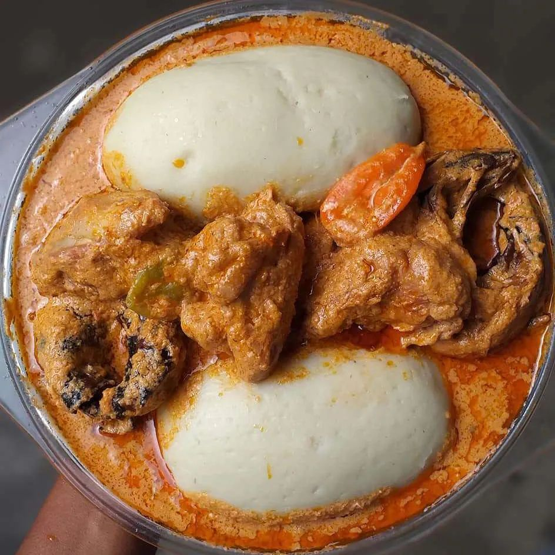

Voir auusi notre plat d'akassa
Retour à la page d'accueil
Igname Pilée

L'igname pilée est un plat traditionnel de l'Afique de l'Ouest notamment au Bénin, fait à partir d'igname bouillie qui est ensuite pilée dans un mortier jusqu'à obtenir une pâte gluante et élastique accompagnée d'une délicieuse sauce d'arachide riche en viande. Elle ressemble à une purée de pomme de terre épaisse et est couramment servie avec du soupes.
Ingrédients
- Un (01) igname entier.
Étapes
- Étape 1: Épulcher l'igname, le couper en morceau et prendre un chiffon et le laver correctement.
- Étape 2: Mettre les morceauux d'igname dans une casserole, ajouter de l'eau et portée à ébullition pendant 15 à 20 minutes.
- Étape 3: Mettre l'igname cuit dans un mortier et commencer à piler de sorte qu'il n'y ait pas des grumeaux; ajouter un peu de l'eau de cuisson si nécessaire lorsque vous constatez que c'est trop dure ensuite votre igname pilée est prêt vous pouvez le mangé avec de la sauce d'arachide et crin-crin.